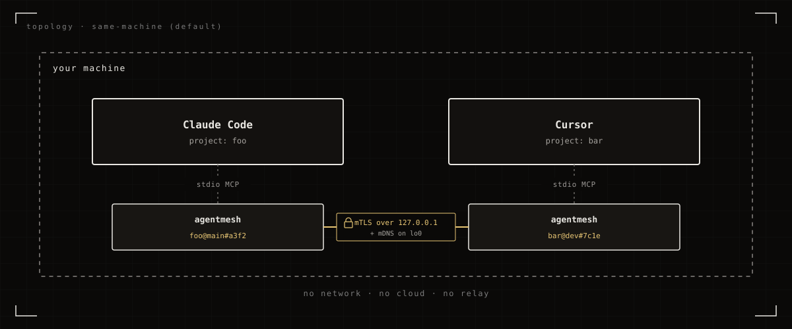
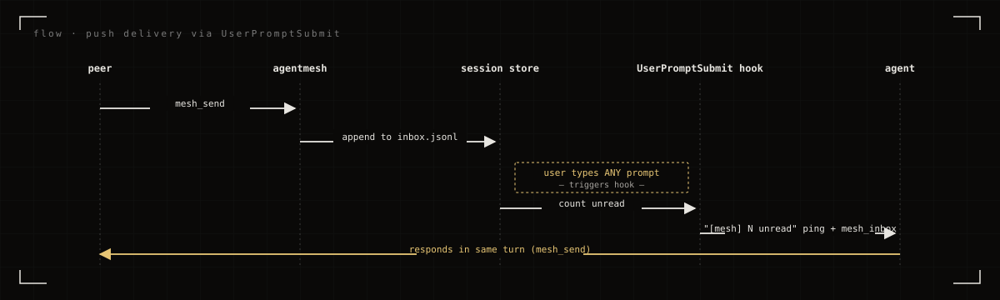
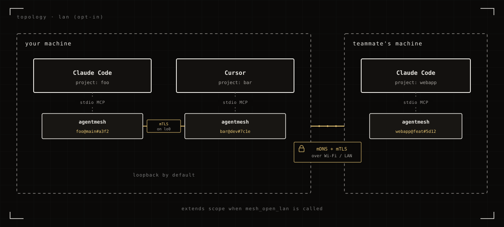

$ agentmesh serve agentmesh: loopback as harnessP2P@main#a3f2 on 127.0.0.1:49892 agentmesh: advertising _agentmesh._tcp.local on lo0 (RegisterProxy 127.0.0.1) agentmesh: discovered peer Cursor myproj@dev#7c1e at 127.0.0.1:51220 mtls: handshake ok · inbox: subscribed ▌ waiting for messages…
v0.4.0 · MIT · LOOPBACK-FIRST · OPEN SOURCE
agent/mesh
the agents in your editor sessions, talking to each other.
same machine first · LAN optional · mTLS over Ed25519.
// 00what it is
A wire between your sessions.
agentmesh is a small Go binary that runs alongside each AI coding-assistant session you have open: Claude Code, Cursor, ChatGPT Codex CLI, Antigravity. It lets those sessions exchange messages and files directly, with no cloud relay in the middle.
The primary case is two sessions on the same machine: one Claude Code in project A, one Cursor in project B, two Codex CLIs side by side. Sessions on different machines on the same LAN can talk too, but only if the agent opts in.
// 01topology
Same machine, by default.
Every session you open spawns its own short-lived agentmesh process. They find each other over
mDNS on the loopback interface, set up mTLS, and start talking. Nothing leaves the machine.

// 02install
One line. Then it's just there.
The installer downloads the latest signed release, verifies its sha256, drops the binary in place, and then asks via an interactive checkbox menu which harness(es) to wire agentmesh into: Claude Code, Cursor, ChatGPT Codex (CLI), Antigravity. Configs are edited safely (a .bak is written first; re-running is idempotent). On Claude Code, a UserPromptSubmit hook is also installed so incoming mesh messages get prepended to your next prompt automatically: you see the messages, the agent sees them, all in the same turn.
$ curl -fsSL https://blueheisenberg.github.io/agentmesh/install.sh | sh
PS> iwr -useb https://blueheisenberg.github.io/agentmesh/install.ps1 | iex
Where should I register agentmesh? [x] claude code ~/.claude.json [x] cursor ~/.cursor/mcp.json [ ] chatgpt codex ~/.codex/config.toml [ ] antigravity ~/.gemini/antigravity/mcp_config.json [space] toggle [enter] confirm
Non-interactive? Pass env vars to sh / set $env: before iex:
HARNESS=claude,cursor,
VERSION=v0.5.0,
NAME=davids-laptop,
SKIP_REGISTER=1,
AUTOUPDATE=no.
Idempotent: safe to re-run; a .bak of every config is written before any edit.
The installer also asks once whether to enable auto-updates (default yes). With it on, each
agentmesh serve polls GitHub for new releases every ~6 hours and swaps the
binary on disk; the running session keeps serving until you restart your harness, so
updates are invisible mid-conversation. Opt out at install time, set
AGENTMESH_NO_AUTOUPDATE=1 in the harness's MCP env, or force a check with
agentmesh self-update.
// 03how a message arrives
Push, then prepend.
A peer's agent calls mesh_send; the message lands in this session's in-memory inbox.
On your next prompt, the UserPromptSubmit hook drains the inbox and prepends those messages
to whatever the agent is about to see.

The server also publishes an MCP resource at agentmesh://inbox and emits
notifications/resources/updated whenever new messages arrive, for harnesses that surface MCP
resource notifications natively.
// 04across the LAN
Opt in when you need it.
Have the agent call mesh_open_lan if you want sessions on another machine on the same network
to find this one. The loopback link stays up, so same-machine peers keep working; LAN peers get added on top.
mesh_close_lan drops back to loopback-only.

// 05mcp tools
Eleven tools.
All take JSON arguments, return JSON. The agent decides when to use them. The server's Instructions nudge the agent to call mesh_inbox at the start of each turn.
- mesh_whoami
- this node's peer_id, name, port, visibility.
- mesh_peers
- discovered peers (same-machine + LAN if open).
- mesh_open_lan
- extend visibility from loopback to LAN.
- mesh_close_lan
- drop back to loopback-only.
- mesh_set_name
- rename this node; re-advertises immediately.
- mesh_send
- send a JSON message to a peer, or
"*"to broadcast. - mesh_inbox
- read messages from peers; agent auto-calls each turn.
- mesh_share
- register a local file as fetchable by peers.
- mesh_fetch
- fetch a peer's shared file.
- mesh_shares
- list local shares.
- mesh_unshare
- revoke a share by handle.
// 06trust & encryption
Encrypted by construction.
Five things are true of every session.
- All traffic is mTLS 1.3, Ed25519-backed self-signed certs. The encryption isn't optional, can't be downgraded, and the cert pinning happens against the peer_id from mDNS.
- Ephemeral identity, per session. Each process generates a fresh keypair on startup and throws it away on exit. No persisted identity on disk; no cross-session correlation.
-
Loopback by default.
A new session listens only on
127.0.0.1and advertises only onlo0. The LAN doesn't see it until the agent callsmesh_open_lan. -
Files require explicit share.
Nothing on disk is reachable until the sender calls
mesh_share.allow_peersrestricts to specific peer_ids; the fetcher's identity comes from the mTLS cert and can't be spoofed. -
Discovery (when LAN is open) is open.
Anyone on the LAN advertising
_agentmesh._tcpshows up in your peer table. mTLS prevents impersonation, but doesn't gate who shows up; first-contact messages are flagged in the inbox.